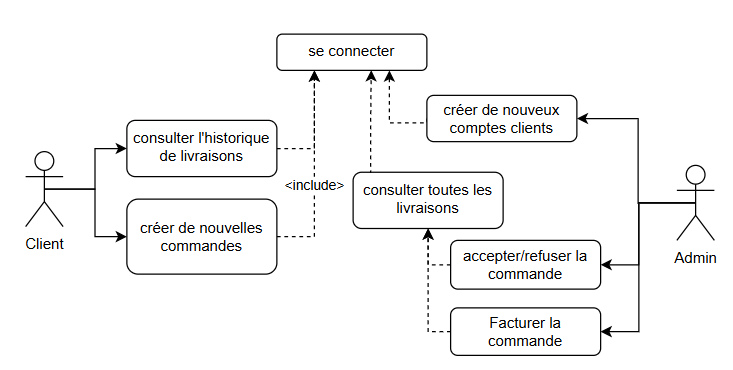
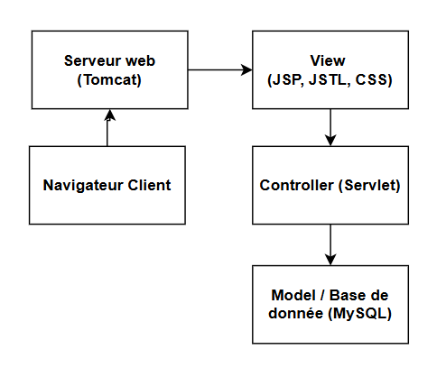
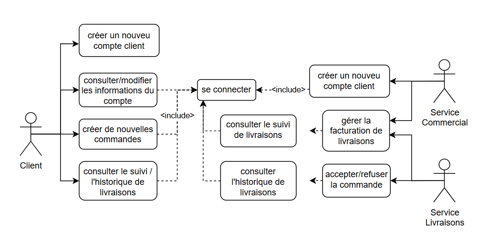
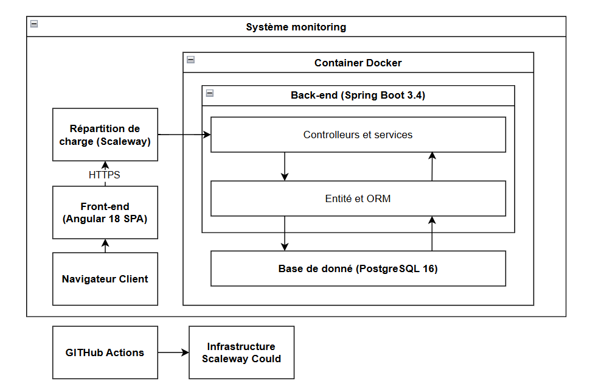

LiVrai
Présentée par Xinhe YU
le 07 mars 2025
LiVrai: Audit et Refonte
Audit de l’application existante
Proposition sur la nouvelle application
- les fonctionnalités
- les choix techniques
Partie Audit : Contexte et fonctionnalité

Partie Audit : Contexte et fonctionnalité

Partie Audit : Points forts et déficiences
Points forts
- Architecture MVC claire
- Code modulaire
- Utilisation de technologies standards Java EE
- Structure de projet Maven
- Gestion des rôles utilisateurs
Déficiences
- Versions obsolètes
- Sécurité potentiellement insuffisante
- Interface utilisateur basique
Partie Refonte : Objectifs
Caractéristiques de la refonte
robuste, performante et évolutive;
adaptee aux besoin de LiVrai
sécurisée, conforme aux normes et réglementations
Indicateurs clés pour mesurer la réussite
satisfaction client
efficacité opérationnelle
performance technique
Partie Refonte : Nouvelles Fonctionnalités

Partie Refonte : Architecture technique proposée

Partie Refonte
Sécurité
- Spring Security
- Protéger contre contre les injections SQL, XSS et autres vulnérabilités courantes
Conformité
- respecter les exigences du RGPD
- consentement explicite pour la collecte des données personnelles
Accessibilité
- Accessible pour tous les utilisateurs
- Assurer la compatibilité avec les technologies d'assistance
- Suivre les normes d'accessibilité (RGAA, WCAG)
Conclusion
Merci de votre attention !